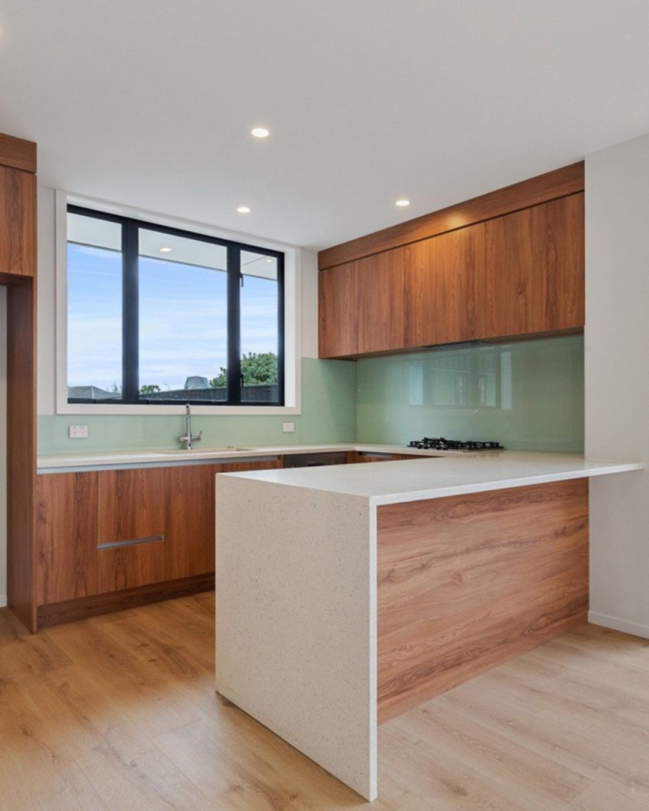
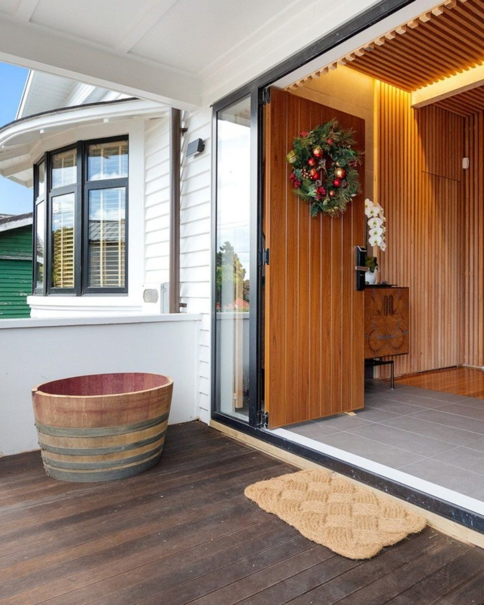
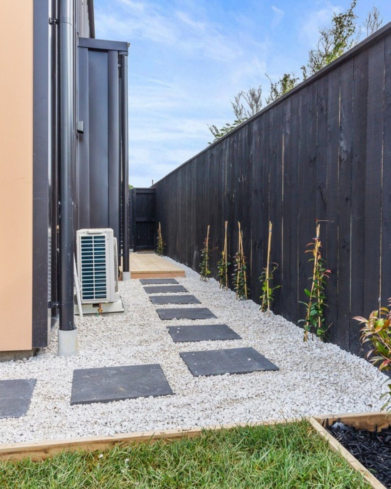
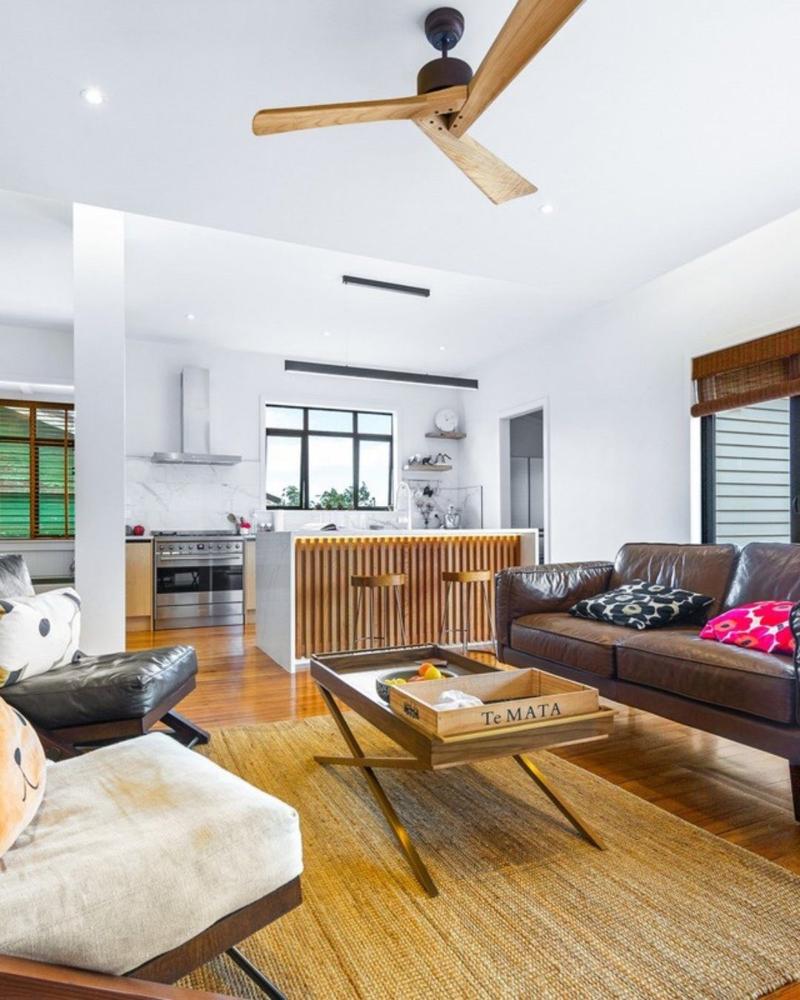

NAMI STUDIO / Homes
01 — Homes · Sydney
Japandi home interior design in Sydney.
We design new builds, renovations and single rooms with the calm of a Japanese home — hinoki bathrooms, shoji screens, tatami corners, washi light and a proper genkan entry — shaped for how Australians really live.
Start your enquiry
What we design
From one room to the whole home.
New builds
Interior design from the plans up: layout, joinery, materials, lighting and colour, planned with your builder from day one.
Renovations
Kitchens, bathrooms, living areas and whole-home renovations that bring Japanese calm into an existing house.
Single rooms & styling
One bedroom, an entry, a home office or a bathroom — a small project is welcome.
Budget styling
The Japandi look with IKEA, Kmart and affordable finds, arranged with Japanese ideas of light, space and order.
Japanese gardens
Courtyards, side paths and backyards with stepping stones, gravel, moss-like planting and quiet corners.
Builder search
When the design is ready, we find licensed builders and arrange quotes — one contact until construction begins.
Japanese details, made for Australia
The ideas we bring home.
These are the Japanese elements clients ask us about most — and how we adapt each one to Sydney houses and weather.
Hinoki JAPANESE CYPRESS
A fragrant, water-resistant timber used in Japanese baths for centuries. We use it for bathroom walls, vanity details, bath stools and ofuro soaking tubs.
Ofuro SOAKING TUB
A deep bath made for relaxing, not washing. A compact ofuro fits smaller Sydney bathrooms better than a long Western tub.
Shoji SLIDING SCREENS
Timber lattice screens that soften daylight and divide open-plan rooms without blocking light. Modern panels are durable and easy to clean.
Tatami WOVEN MATS
Soft rush-grass flooring for a guest room, reading corner, kids' space or meditation nook — full washitsu or a raised tatami platform.
Washi JAPANESE PAPER
Handmade paper for pendant lights, screens and wall finishes. It turns harsh light into a warm, even glow.
Genkan ENTRY
A defined entry with a step, bench and shoe storage. It keeps the home cleaner and gives a calm moment of arrival.
Engawa VERANDAH
A timber edge between inside and garden — a natural fit for Australian decks and indoor-outdoor living.
Wabi-sabi QUIET BEAUTY
Natural materials, honest texture and fewer, better things. A home that feels lived-in and calm, not showroom-perfect.
Spaces we've worked on
Homes, in real life.





How it works
From first talk to your builder.
Talk
We visit or call to understand your home, family routine and budget.
Concept
Design concept and mood board, with up to two rounds of changes.
Plan
Layout, materials, lighting and Japanese details finalised.
Builder
We find licensed builders, arrange quotes and stay with you until the build begins.
FAQ
Questions about Japanese-style homes.
Can I have a hinoki bathroom in Australia?
Yes. Hinoki (Japanese cypress) is naturally water-resistant and fragrant. We use it for wall panels, bath trays, stools or a full ofuro soaking tub, and combine it with good ventilation so it ages beautifully in Sydney's climate.
Can you add a tatami room or tatami corner to my home?
Yes. A full washitsu (tatami room) or a raised tatami corner in a living area works well as a guest room, reading nook, kids' play space or meditation area. We plan size, height and ventilation so it suits Australian living.
What are shoji screens and can they be used in a modern home?
Shoji are timber-framed sliding screens with translucent paper or modern washi-look panels. They soften light, save space compared with swinging doors and divide open-plan rooms without making them dark.
Do you design renovations, new builds or just one room?
All three. We design whole new builds and renovations, and we also take on a single room, a bathroom, an entry or a garden.
Can I get a Japandi look on a budget?
Yes. Our budget styling uses pieces from IKEA, Kmart and other affordable stores, combined with Japanese layout and lighting ideas. We share many of these on Instagram @nami.studio_au.
Do you build the design too?
We are designers, not builders. Once the design is ready we find and arrange licensed builders and trades through Japan Homes' 20+ years of connections, and stay with you until construction begins.
Start a home project
Let's design your home.
Tell us about your home, the space you want to change and the feeling you're after.